Race review
Room to race
Seven rivals now take different lines and settle into different paces. Following one kart earns one slingshot. A kart with a full item slot leaves the box for the driver behind.
| 48 races · 100cc Normal | Released | Candidate |
|---|---|---|
| Opening samples with a dense pack | 90.3% | 32.3% |
| All samples with a dense pack | 43.7% | 10.9% |
| Rival slipstream boosts per race | 143.3 | 40.8 |
| Boxes collected on eligible passes | 61.0% | 86.0% |
All 12 courses, four seeded fields each, and the same driver in the human slot. A dense pack means four rivals within 20 m. The opening covers seconds 4–24. Measurements by course and class.
Silicon Valley Circuit · race camera
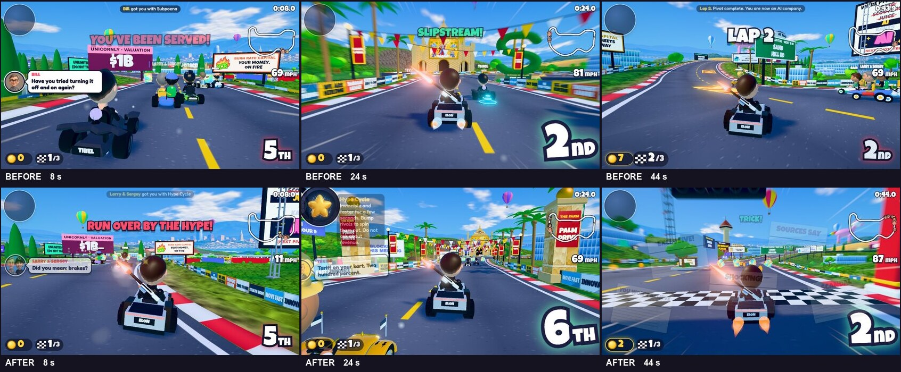
International Waters · race camera
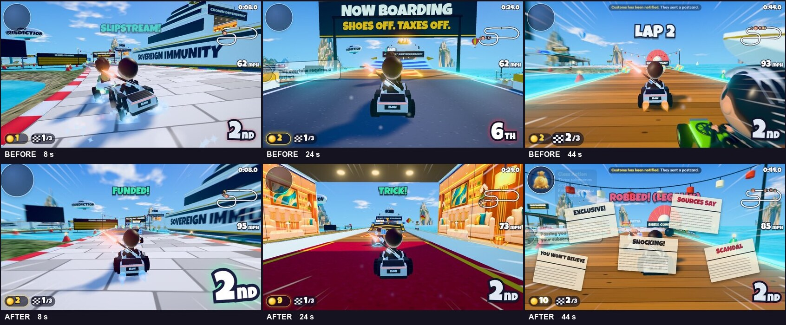
Hear the difference
The same countdown, boost, coin, and collision on Silicon Valley and Davos. Switch mixes at the same point in the clip.
Four Offshore Cup themes
Davos, Boring Tunnel, International Waters, and WeWork Memorial.
Read the road
Forward-facing boost arrows, numbered grid boxes, and a funding-round gantry that changes as you lap Silicon Valley.
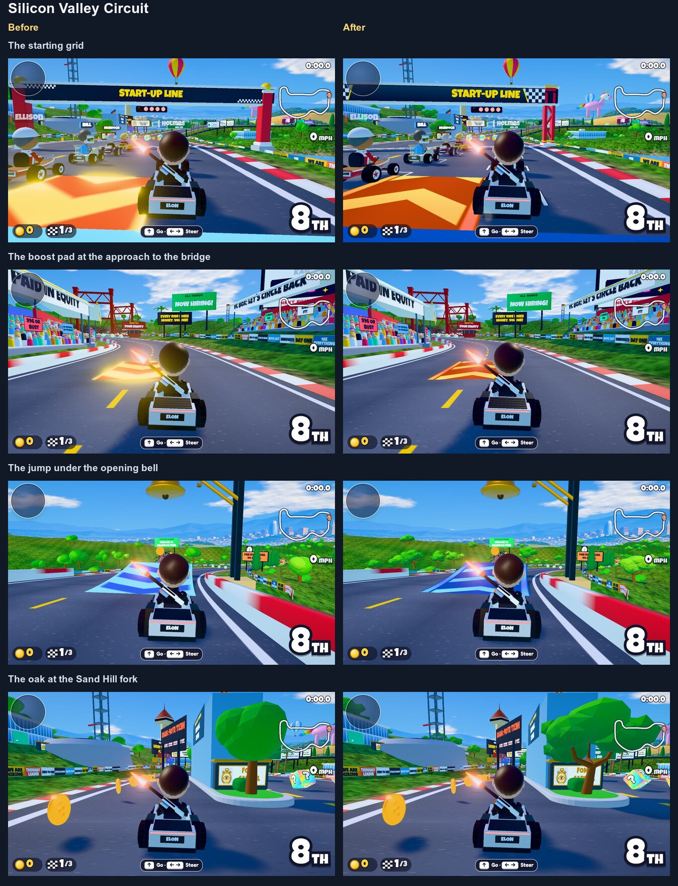
Phone and tablet views
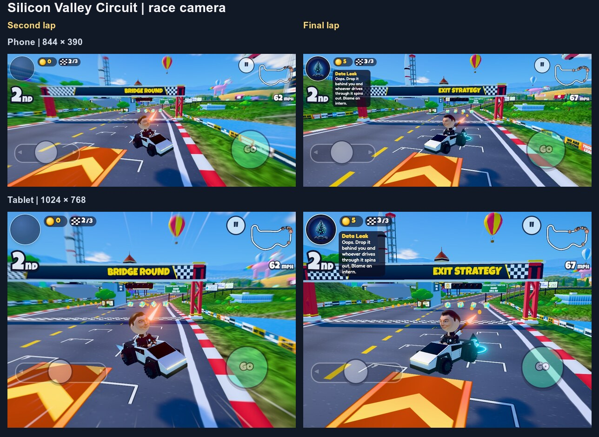
Beat the clock
Time Trial trades its permanent first-place badge for your time, lap splits, and a mark to beat on the next run.

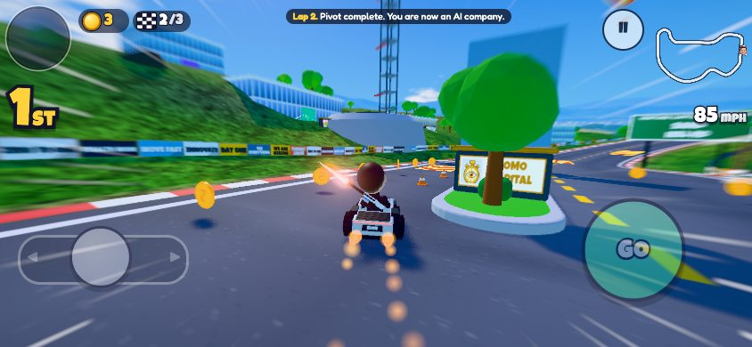

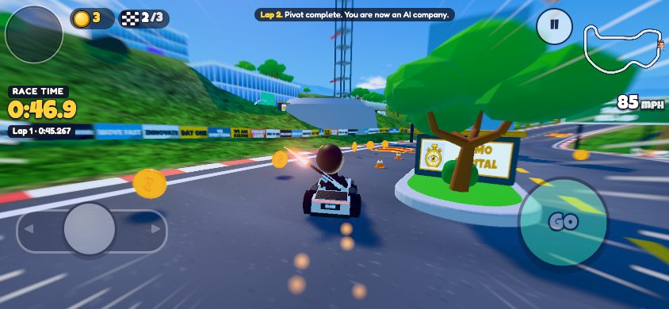

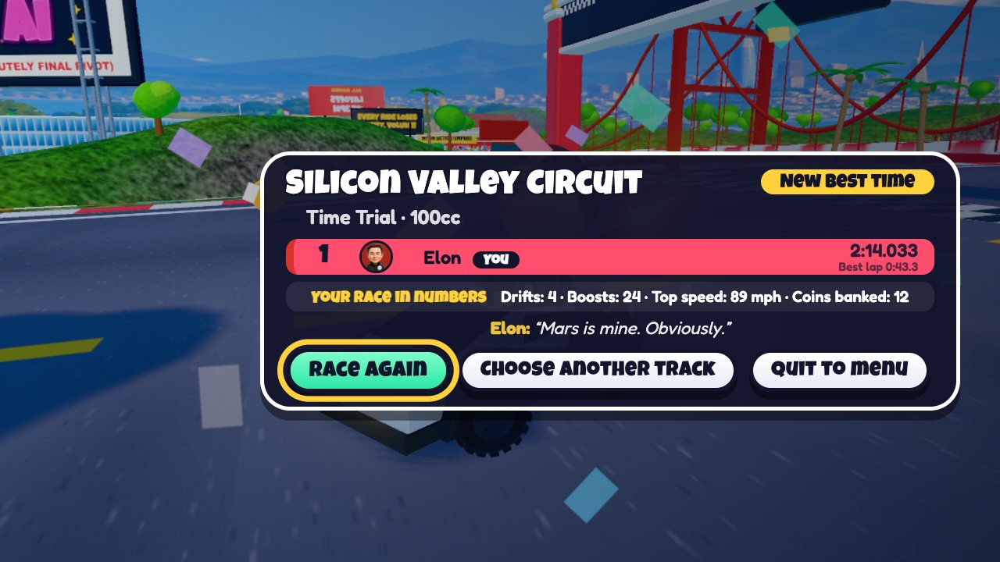

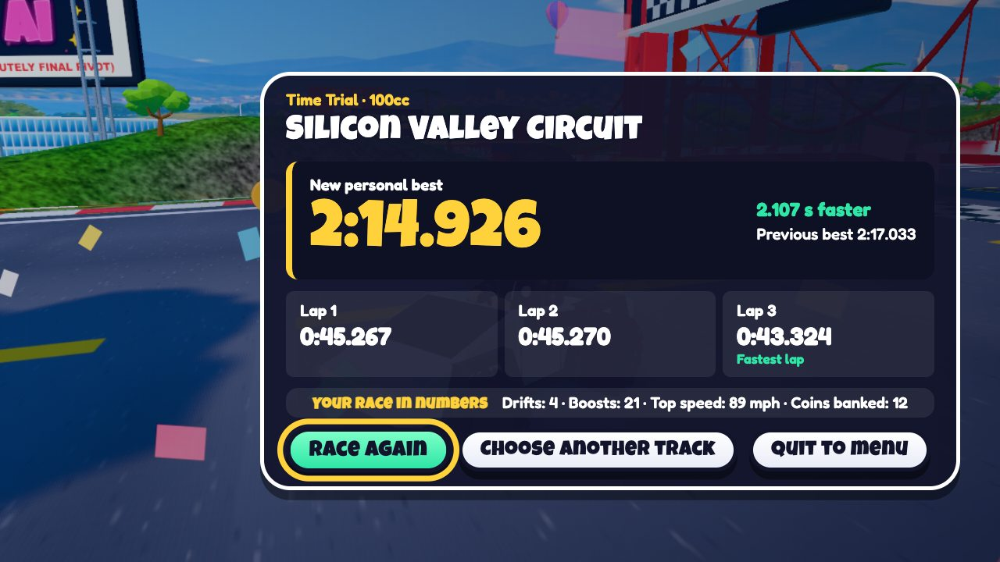
Two finish layouts to compare
Both use the same run and show the same information.

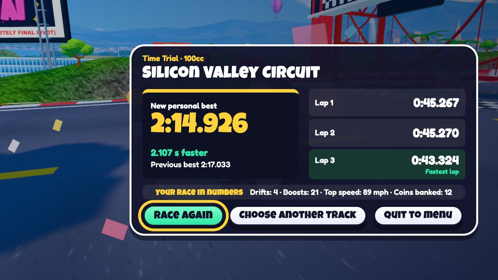
Case dismissed
Save a funding boost for the Antitrust Suit’s dive. Get the timing right and you escape; the blast can still catch the karts beside you.
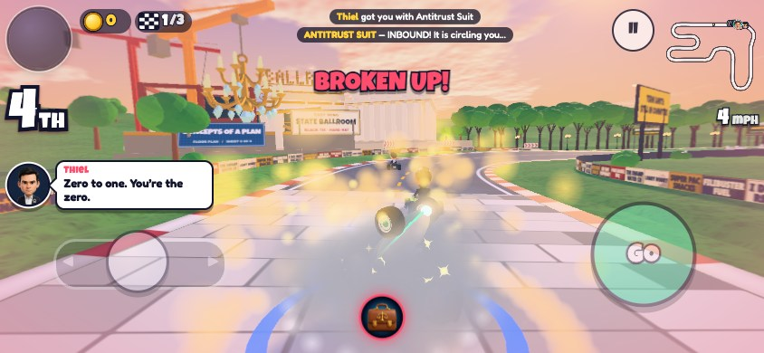
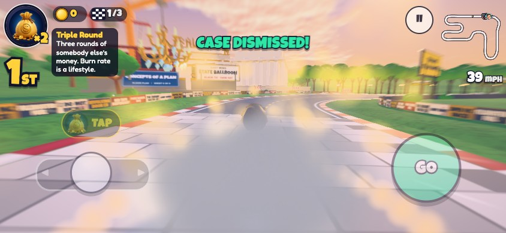